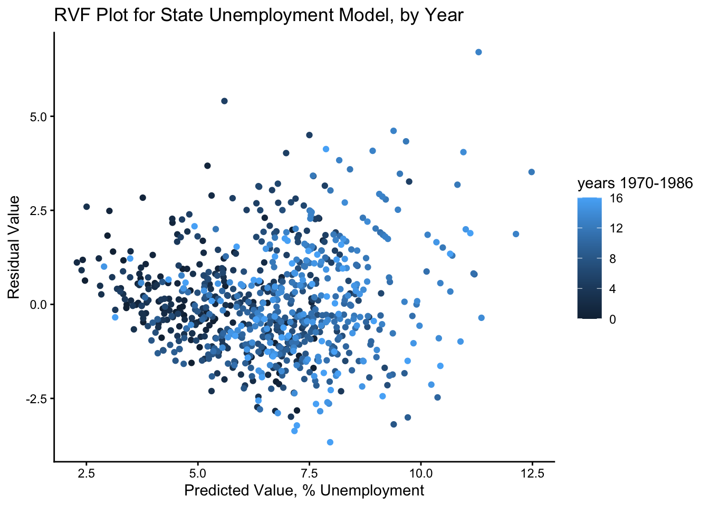

12 Checking Assumptions for MLMs
Data for this chapter: productivity.dta
Copy productivity.dta into this project folder before rendering.
This week, we will use the productivity dataset from Stata, developed by Dr. Alicia Munnell and published by the Federal Reserve Bank of Boston (1990). It tracks US states over time, so observations are years nested within states.
Diagnostics are not a pass-fail checklist. They are evidence you weigh, and the useful question is never “was an assumption violated” but “is this violation bad enough to change what I conclude.” This chapter runs the standard checks and then does the thing that actually settles the question: refits the model under different assumptions and sees whether the answer moves.
12.1 Load in our MVP packages
12.2 Part 1: loading in the data, and then recoding variables
12.2.1 Load in the data
Rows: 816
Columns: 11
$ state <dbl> 19, 44, 5, 41, 45, 16, 37, 20, 25, 11, 14, 40, 23, 42, 4, 26, …
$ region <dbl> 1, 5, 8, 7, 9, 7, 1, 3, 4, 3, 4, 6, 4, 8, 9, 8, 3, 8, 3, 1, 2,…
$ year <dbl> 1970, 1970, 1970, 1970, 1970, 1970, 1970, 1970, 1970, 1970, 19…
$ public <dbl> 21923.28, 20732.56, 11402.52, 53639.88, 25751.49, 19638.31, 43…
$ hwy <dbl> 9.052737, 9.329386, 8.390089, 10.163615, 9.066138, 9.199419, 7…
$ water <dbl> 7.714320, 7.892493, 7.680190, 9.030341, 8.142238, 7.886390, 6.…
$ other <dbl> 9.318403, 8.823389, 8.483487, 9.870202, 9.522063, 8.865893, 7.…
$ private <dbl> 10.543170, 10.454692, 10.073642, 12.272218, 10.529598, 11.4907…
$ gsp <dbl> 11.073319, 10.784545, 10.153818, 11.988675, 10.577044, 11.0455…
$ emp <dbl> 7.715793, 7.325742, 6.620340, 8.195582, 6.984160, 6.940803, 5.…
$ unemp <dbl> 4.6, 3.4, 4.4, 4.4, 9.1, 6.6, 5.2, 6.7, 3.1, 4.1, 4.8, 4.8, 3.…
12.2.2 The describe function from Hmisc is a nice codebook
Hmisc::describe(productivity)productivity
11 Variables 816 Observations
--------------------------------------------------------------------------------
state : states 1-48 Format:%9.0g
n missing distinct Info Mean pMedian Gmd .05
816 0 48 1 24.5 24.5 16.01 3.00
.10 .25 .50 .75 .90 .95
5.00 12.75 24.50 36.25 44.00 46.00
lowest : 1 2 3 4 5, highest: 44 45 46 47 48
--------------------------------------------------------------------------------
region : regions 1-9 Format:%9.0g
n missing distinct Info Mean pMedian Gmd
816 0 9 0.983 4.958 5 2.811
Value 1 2 3 4 5 6 7 8 9
Frequency 102 51 85 119 136 68 68 136 51
Proportion 0.125 0.062 0.104 0.146 0.167 0.083 0.083 0.167 0.062
--------------------------------------------------------------------------------
year : years 1970-1986 Format:%9.0g
n missing distinct Info Mean pMedian Gmd .05
816 0 17 0.997 1978 1978 5.654 1970
.10 .25 .50 .75 .90 .95
1971 1974 1978 1982 1985 1986
Value 1970 1971 1972 1973 1974 1975 1976 1977 1978 1979 1980
Frequency 48 48 48 48 48 48 48 48 48 48 48
Proportion 0.059 0.059 0.059 0.059 0.059 0.059 0.059 0.059 0.059 0.059 0.059
Value 1981 1982 1983 1984 1985 1986
Frequency 48 48 48 48 48 48
Proportion 0.059 0.059 0.059 0.059 0.059 0.059
--------------------------------------------------------------------------------
public : public capital stock Format:%9.0g
n missing distinct Info Mean pMedian Gmd .05
816 0 815 1 25037 18713 24904 4025
.10 .25 .50 .75 .90 .95
4407 7097 17572 27692 56488 69628
lowest : 2627.12 2756.19 2894.58 2925.39 2927.85
highest: 139514 139662 139777 139910 140217
--------------------------------------------------------------------------------
hwy : log(highway component of public) Format:%9.0g
n missing distinct Info Mean pMedian Gmd .05
816 0 816 1 8.9 8.894 0.9192 7.639
.10 .25 .50 .75 .90 .95
7.758 8.258 8.930 9.330 10.113 10.308
lowest : 7.51051 7.51216 7.51681 7.52155 7.52692
highest: 10.7593 10.7608 10.7699 10.77 10.7727
--------------------------------------------------------------------------------
water : log(water component of public) Format:%9.0g
n missing distinct Info Mean pMedian Gmd .05
816 0 815 1 7.6 7.613 1.3 5.662
.10 .25 .50 .75 .90 .95
5.962 6.639 7.726 8.371 9.097 9.299
lowest : 5.43136 5.43747 5.44029 5.45357 5.4563
highest: 10.0649 10.0786 10.0792 10.0909 10.1102
--------------------------------------------------------------------------------
other : log(bldg/other component of public) Format:%9.0g
n missing distinct Info Mean pMedian Gmd .05
816 0 816 1 8.736 8.754 1.245 6.995
.10 .25 .50 .75 .90 .95
7.202 7.819 8.855 9.359 10.067 10.265
lowest : 6.28877 6.4271 6.50578 6.50776 6.51569
highest: 11.2758 11.2893 11.2968 11.2978 11.2988
--------------------------------------------------------------------------------
private : log(private capital stock) Format:%9.0g
n missing distinct Info Mean pMedian Gmd .05
816 0 816 1 10.56 10.57 1.044 8.926
.10 .25 .50 .75 .90 .95
9.285 9.983 10.613 11.079 11.791 12.061
lowest : 8.30714 8.35474 8.39001 8.42893 8.47431
highest: 12.7913 12.8 12.8043 12.8058 12.8356
--------------------------------------------------------------------------------
gsp : log(gross state product) Format:%9.0g
n missing distinct Info Mean pMedian Gmd .05
816 0 807 1 10.51 10.51 1.165 8.961
.10 .25 .50 .75 .90 .95
9.099 9.711 10.596 11.129 11.882 12.392
lowest : 8.37885 8.39796 8.41804 8.4362 8.44505
highest: 12.8485 12.8753 12.9493 13.0038 13.0488
--------------------------------------------------------------------------------
emp : log(non-agriculture payrolls) Format:%9.0g
n missing distinct Info Mean pMedian Gmd .05
816 0 807 1 6.978 6.987 1.166 5.332
.10 .25 .50 .75 .90 .95
5.516 6.163 7.060 7.656 8.381 8.642
lowest : 4.68491 4.70953 4.76473 4.83708 4.91632
highest: 9.20691 9.20887 9.26615 9.30374 9.32883
--------------------------------------------------------------------------------
unemp : state unemployment rate Format:%9.0g
n missing distinct Info Mean pMedian Gmd .05
816 0 80 1 6.602 6.45 2.456 3.6
.10 .25 .50 .75 .90 .95
4.0 5.0 6.2 7.9 9.5 11.0
lowest : 2.8 2.9 3 3.1 3.2, highest: 13 14 15 16 18
--------------------------------------------------------------------------------12.3 A little quick cleaning
Convert region to a factor variable, rescale public capital stock, “zero out” year, and create nonlinear terms.
prod.clean <- productivity %>%
mutate(.,
region.fac = as_factor(region),
year0 = year - 1970,
year_sq = year0^2,
year_cube = year0^3,
pub_cap_1000 = public/1000)
glimpse(prod.clean)Rows: 816
Columns: 16
$ state <dbl> 19, 44, 5, 41, 45, 16, 37, 20, 25, 11, 14, 40, 23, 42, 4,…
$ region <dbl> 1, 5, 8, 7, 9, 7, 1, 3, 4, 3, 4, 6, 4, 8, 9, 8, 3, 8, 3, …
$ year <dbl> 1970, 1970, 1970, 1970, 1970, 1970, 1970, 1970, 1970, 197…
$ public <dbl> 21923.28, 20732.56, 11402.52, 53639.88, 25751.49, 19638.3…
$ hwy <dbl> 9.052737, 9.329386, 8.390089, 10.163615, 9.066138, 9.1994…
$ water <dbl> 7.714320, 7.892493, 7.680190, 9.030341, 8.142238, 7.88639…
$ other <dbl> 9.318403, 8.823389, 8.483487, 9.870202, 9.522063, 8.86589…
$ private <dbl> 10.543170, 10.454692, 10.073642, 12.272218, 10.529598, 11…
$ gsp <dbl> 11.073319, 10.784545, 10.153818, 11.988675, 10.577044, 11…
$ emp <dbl> 7.715793, 7.325742, 6.620340, 8.195582, 6.984160, 6.94080…
$ unemp <dbl> 4.6, 3.4, 4.4, 4.4, 9.1, 6.6, 5.2, 6.7, 3.1, 4.1, 4.8, 4.…
$ region.fac <fct> 1, 5, 8, 7, 9, 7, 1, 3, 4, 3, 4, 6, 4, 8, 9, 8, 3, 8, 3, …
$ year0 <dbl> 0, 0, 0, 0, 0, 0, 0, 0, 0, 0, 0, 0, 0, 0, 0, 0, 0, 0, 0, …
$ year_sq <dbl> 0, 0, 0, 0, 0, 0, 0, 0, 0, 0, 0, 0, 0, 0, 0, 0, 0, 0, 0, …
$ year_cube <dbl> 0, 0, 0, 0, 0, 0, 0, 0, 0, 0, 0, 0, 0, 0, 0, 0, 0, 0, 0, …
$ pub_cap_1000 <dbl> 21.92328, 20.73256, 11.40252, 53.63988, 25.75149, 19.6383…Two of these deserve a note.
Subtracting 1970 from year puts the intercept at the start of the observation window rather than at year zero of the common era, which is both meaningless and thousands of units away from any data we have. Polynomial terms built from the recentered variable are also far less collinear with each other than they would be otherwise.
Dividing public capital by 1,000 is rescaling, and it changes nothing about the model’s fit. What it changes is readability: a coefficient expressed per thousand dollars is easier to report than one carrying several leading zeros. Rescaling a predictor is always safe. Rescaling only some predictors and forgetting which is where people get into trouble, so a name like pub_cap_1000 that records the units is worth the extra characters.
12.4 Part 2: find your “final” or preferred model
12.4.1 Start with a null growth model since this is longitudinal data
model.null.growth <- lmer(unemp ~ year0 + (1|state), REML = FALSE, data = prod.clean)
summary(model.null.growth)Linear mixed model fit by maximum likelihood ['lmerMod']
Formula: unemp ~ year0 + (1 | state)
Data: prod.clean
AIC BIC logLik -2*log(L) df.resid
3268.6 3287.4 -1630.3 3260.6 812
Scaled residuals:
Min 1Q Median 3Q Max
-2.6688 -0.6260 -0.1167 0.4891 4.8594
Random effects:
Groups Name Variance Std.Dev.
state (Intercept) 1.428 1.195
Residual 2.785 1.669
Number of obs: 816, groups: state, 48
Fixed effects:
Estimate Std. Error t value
(Intercept) 5.17075 0.20557 25.15
year0 0.17893 0.01193 15.01
Correlation of Fixed Effects:
(Intr)
year0 -0.464The outcome is state unemployment rate, and the clustering variable is state. This is the same structure as the growth models from Module 8, with states in place of children and years in place of grades.
12.4.2 Add in quadratic effects
model.2 <- lmer(unemp ~ year0 + year_sq + (1|state), REML = FALSE, data = prod.clean)
summary(model.2)Linear mixed model fit by maximum likelihood ['lmerMod']
Formula: unemp ~ year0 + year_sq + (1 | state)
Data: prod.clean
AIC BIC logLik -2*log(L) df.resid
3257.7 3281.2 -1623.8 3247.7 811
Scaled residuals:
Min 1Q Median 3Q Max
-2.4550 -0.6449 -0.1213 0.4901 4.9036
Random effects:
Groups Name Variance Std.Dev.
state (Intercept) 1.431 1.196
Residual 2.738 1.655
Number of obs: 816, groups: state, 48
Fixed effects:
Estimate Std. Error t value
(Intercept) 4.778638 0.232126 20.586
year0 0.335777 0.044987 7.464
year_sq -0.009803 0.002713 -3.614
Correlation of Fixed Effects:
(Intr) year0
year0 -0.558
year_sq 0.467 -0.96512.4.3 Add in cubic effects
model.3 <- lmer(unemp ~ year0 + year_cube + (1|state), REML = FALSE, data = prod.clean)Warning: Some predictor variables are on very different scales: consider rescaling.
You may also use (g)lmerControl(autoscale = TRUE) to improve numerical stability.summary(model.3)Linear mixed model fit by maximum likelihood ['lmerMod']
Formula: unemp ~ year0 + year_cube + (1 | state)
Data: prod.clean
AIC BIC logLik -2*log(L) df.resid
3252.2 3275.7 -1621.1 3242.2 811
Scaled residuals:
Min 1Q Median 3Q Max
-2.3740 -0.6587 -0.1254 0.4910 4.8949
Random effects:
Groups Name Variance Std.Dev.
state (Intercept) 1.432 1.197
Residual 2.719 1.649
Number of obs: 816, groups: state, 48
Fixed effects:
Estimate Std. Error t value
(Intercept) 4.7913162 0.2230693 21.48
year0 0.2915168 0.0286038 10.19
year_cube -0.0004791 0.0001109 -4.32
Correlation of Fixed Effects:
(Intr) year0
year0 -0.533
year_cube 0.394 -0.911
fit warnings:
Some predictor variables are on very different scales: consider rescaling.
You may also use (g)lmerControl(autoscale = TRUE) to improve numerical stability.12.4.4 Both quadratic and cubic effects
model.4 <- lmer(unemp ~ year0 + year_sq + year_cube + (1|state), REML = FALSE, data = prod.clean)Warning: Some predictor variables are on very different scales: consider rescaling.
You may also use (g)lmerControl(autoscale = TRUE) to improve numerical stability.summary(model.4)Linear mixed model fit by maximum likelihood ['lmerMod']
Formula: unemp ~ year0 + year_sq + year_cube + (1 | state)
Data: prod.clean
AIC BIC logLik -2*log(L) df.resid
3241.1 3269.3 -1614.5 3229.1 810
Scaled residuals:
Min 1Q Median 3Q Max
-2.2040 -0.6472 -0.1329 0.4740 4.8086
Random effects:
Groups Name Variance Std.Dev.
state (Intercept) 1.434 1.198
Residual 2.673 1.635
Number of obs: 816, groups: state, 48
Fixed effects:
Estimate Std. Error t value
(Intercept) 5.2388480 0.2542656 20.604
year0 -0.0723854 0.1040941 -0.695
year_sq 0.0559415 0.0153967 3.633
year_cube -0.0027393 0.0006317 -4.336
Correlation of Fixed Effects:
(Intr) year0 yer_sq
year0 -0.592
year_sq 0.484 -0.962
year_cube -0.417 0.904 -0.985
fit warnings:
Some predictor variables are on very different scales: consider rescaling.
You may also use (g)lmerControl(autoscale = TRUE) to improve numerical stability.Unemployment over the 1970s and 1980s went through recessions and recoveries, so a straight line is unlikely to describe it well. The polynomial terms give the trajectory room to bend more than once.
12.4.5 Now for some more predictors
model.5 <- lmer(unemp ~ year0 + year_sq + year_cube + gsp + private + pub_cap_1000 + (1|state), REML = FALSE, data = prod.clean)Warning: Some predictor variables are on very different scales: consider rescaling.
You may also use (g)lmerControl(autoscale = TRUE) to improve numerical stability.summary(model.5)Linear mixed model fit by maximum likelihood ['lmerMod']
Formula: unemp ~ year0 + year_sq + year_cube + gsp + private + pub_cap_1000 +
(1 | state)
Data: prod.clean
AIC BIC logLik -2*log(L) df.resid
3108.9 3151.3 -1545.5 3090.9 807
Scaled residuals:
Min 1Q Median 3Q Max
-2.5959 -0.6424 -0.1207 0.5125 4.7506
Random effects:
Groups Name Variance Std.Dev.
state (Intercept) 9.703 3.115
Residual 1.993 1.412
Number of obs: 816, groups: state, 48
Fixed effects:
Estimate Std. Error t value
(Intercept) 2.704e+01 5.335e+00 5.068
year0 -6.084e-03 9.176e-02 -0.066
year_sq 3.750e-02 1.338e-02 2.803
year_cube -1.787e-03 5.502e-04 -3.247
gsp -1.073e+01 7.365e-01 -14.574
private 8.409e+00 8.502e-01 9.891
pub_cap_1000 9.064e-02 1.686e-02 5.376
Correlation of Fixed Effects:
(Intr) year0 yer_sq yer_cb gsp privat
year0 0.134
year_sq 0.019 -0.944
year_cube -0.029 0.882 -0.984
gsp -0.127 -0.043 0.103 -0.126
private -0.518 -0.058 -0.089 0.116 -0.780
pub_cp_1000 0.550 -0.012 0.026 -0.011 -0.167 -0.232
fit warnings:
Some predictor variables are on very different scales: consider rescaling.
You may also use (g)lmerControl(autoscale = TRUE) to improve numerical stability.This is our “final” model, and everything that follows examines it rather than building further.
12.5 Use the augment function from the broom.mixed package
This gets predictions, residuals, Cook’s distances, and more.
library(broom.mixed)
diagnostics <- augment(model.5)augment() returns the original data plus a set of new columns whose names begin with a dot: .fitted, .resid, .cooksd, and others. Everything in this chapter works from that data frame.
One thing worth knowing: diagnostics contains one row per observation the model actually used. If any rows were dropped for missing data, this frame is smaller than prod.clean. That is a feature, since it means residuals and fitted values always line up, but it does mean you should use diagnostics rather than the original data for anything downstream.
12.6 Step 1: assess normality of residuals
12.6.1 Visually, with a histogram
ggplot(data = diagnostics, mapping = aes(x = .resid)) +
geom_histogram(binwidth = .25) + theme_classic() +
labs(title = "Histogram of Residuals for State Unemployment Model",
x = "Residual Value") +
geom_vline(xintercept = c(-2.5, 2.5), linetype = "dotted")
The dotted reference lines mark ±2.5, a rough boundary beyond which residuals are worth a closer look. What you are checking for is severe skew, heavy tails, or obvious multimodality, not perfect symmetry.
12.6.2 Statistically, with the Shapiro-Wilk test
shapiro.test(diagnostics$.resid)
Shapiro-Wilk normality test
data: diagnostics$.resid
W = 0.97666, p-value = 3.899e-10Expect this to be significant, and do not make much of it. Shapiro-Wilk detects arbitrarily small departures from normality once the sample is reasonably large, and with several hundred observations it will reject for essentially any real dataset.
The histogram carries more information than the test. It is also worth remembering what this assumption buys: normality of residuals matters mainly for small-sample inference, and at these sample sizes the central limit theorem does most of the work regardless.
shapiro.test() accepts between 3 and 5,000 observations and errors outside that range. If you apply it to a larger model, sample first:
set.seed(664)
shapiro.test(sample(diagnostics$.resid, 5000))12.7 Step 2: use a residuals vs. fitted (RVF) plot to assess homoskedasticity of errors
12.7.1 Basic RVF plot, without groups
ggplot(data = diagnostics, mapping = aes(x = .fitted, y = .resid)) +
geom_point() + labs(title = "RVF Plot for State Unemployment Model",
x = "Predicted Value, % Unemployment",
y = "Residual Value") + theme_classic()
Read this plot for shape rather than for scatter. A fan or funnel means the residual variance depends on the fitted value, which is heteroskedasticity. A curve means the relationship is not linear in the predictors as specified. An even, shapeless cloud is what you want.
Be specific in your write-up about where in the fitted range any problem appears. A violation confined to a sparse tail is a different matter from one across the whole range.
12.7.2 Same thing, but with added color by year0
ggplot(data = diagnostics, mapping = aes(x = .fitted, y = .resid, color = year0)) +
geom_point() + labs(title = "RVF Plot for State Unemployment Model, by Year",
x = "Predicted Value, % Unemployment",
y = "Residual Value") + theme_classic()
Adding color turns a general diagnostic into a specific one. If residuals cluster by year, with all the dark points high and the light ones low, the model is systematically missing something about time. That is far more actionable than knowing the residuals are merely uneven, and it is the kind of pattern longitudinal data produces routinely.
12.8 Step 3: use Cook’s distance to identify outliers
ggplot(data = diagnostics, mapping = aes(x = .fitted, y = .cooksd, label = state)) +
geom_point() + geom_text(nudge_x = .25) + theme_classic() +
labs(title = "Cook's Distance Plot for State Unemployment Model",
x = "Predicted Value, % Unemployment",
y = "Cook's Distance") +
geom_hline(yintercept = 4/816, linetype = "dotted")
Labelling the points is what makes this plot useful rather than decorative. An unlabelled outlier is a puzzle; a labelled one is a case you can go look at.
The reference line at 4/816 is the conventional 4/n cutoff, where 816 is the number of observations. It is a flag, not a verdict.
When a case is flagged, look at it before doing anything. An observation with an impossible value is a data error and should be fixed or removed. An observation that is simply unusual, a state with a genuinely severe recession, is data. Deleting inconvenient observations because a statistic flagged them is not a diagnostic procedure; it is a way of guaranteeing the result you already wanted.
12.9 Step 4: re-run model with robust standard errors
library(robustlmm)
model.robust <- rlmer(unemp ~ year0 + year_sq + year_cube + gsp + private + pub_cap_1000 + (1|state), REML = FALSE, data = prod.clean)Warning: Some predictor variables are on very different scales: consider rescaling.
You may also use (g)lmerControl(autoscale = TRUE) to improve numerical stability.summary(model.robust)Robust linear mixed model fit by DAStau
Formula: unemp ~ year0 + year_sq + year_cube + gsp + private + pub_cap_1000 + (1 | state)
Data: prod.clean
Scaled residuals:
Min 1Q Median 3Q Max
-2.9180 -0.6434 -0.0609 0.5851 5.5981
Random effects:
Groups Name Variance Std.Dev.
state (Intercept) 7.072 2.659
Residual 1.729 1.315
Number of obs: 816, groups: state, 48
Fixed effects:
Estimate Std. Error t value
(Intercept) 2.606e+01 4.862e+00 5.359
year0 4.230e-03 8.744e-02 0.048
year_sq 3.277e-02 1.278e-02 2.565
year_cube -1.512e-03 5.255e-04 -2.877
gsp -1.011e+01 6.922e-01 -14.607
private 7.908e+00 7.923e-01 9.982
pub_cap_1000 8.644e-02 1.554e-02 5.562
note: Satterthwaite df skipped: problem size 32,640 exceeds the 5,000 auto cutoff; showing t-values without p-values. Request it with summary(object, df = "satterthwaite"), or raise options(robustlmm.summary.df.max).
Correlation of Fixed Effects:
(Intr) year0 yer_sq yer_cb gsp privat
year0 0.122
year_sq 0.021 -0.946
year_cube -0.029 0.884 -0.984
gsp -0.125 -0.039 0.100 -0.124
private -0.506 -0.053 -0.089 0.115 -0.790
pub_cp_1000 0.574 -0.007 0.022 -0.008 -0.184 -0.222
Robustness weights for the residuals:
650 weights are ~= 1. The remaining 166 ones are summarized as
Min. 1st Qu. Median Mean 3rd Qu. Max.
0.240 0.638 0.819 0.768 0.934 0.999
Robustness weights for the random effects:
37 weights are ~= 1. The remaining 11 ones are summarized as
Min. 1st Qu. Median Mean 3rd Qu. Max.
0.451 0.581 0.755 0.725 0.841 0.984
Rho functions used for fitting:
Residuals:
eff: smoothed Huber (k = 1.345, s = 10)
sig: smoothed Huber, Proposal 2 (k = 1.345, s = 10)
Random Effects, variance component 1 (state):
eff: smoothed Huber (k = 1.345, s = 10)
vcp: smoothed Huber, Proposal 2 (k = 1.345, s = 10) rlmer() from robustlmm fits the same model but downweights observations with large residuals rather than letting them exert full influence. If the estimates barely move relative to model.5, outliers were not driving your results.
This model can take a while to fit, since it works iteratively.
12.10 Step 5: re-run model with outliers removed (Cook’s distance > .10)
prod.trimmed <- diagnostics %>%
filter(., .cooksd < .10)
model.trimmed <- lmer(unemp ~ year0 + year_sq + year_cube + gsp + private + pub_cap_1000 + (1|state), REML = FALSE, data = prod.trimmed)Warning: Some predictor variables are on very different scales: consider rescaling.
You may also use (g)lmerControl(autoscale = TRUE) to improve numerical stability.summary(model.trimmed)Linear mixed model fit by maximum likelihood ['lmerMod']
Formula: unemp ~ year0 + year_sq + year_cube + gsp + private + pub_cap_1000 +
(1 | state)
Data: prod.trimmed
AIC BIC logLik -2*log(L) df.resid
3034.4 3076.7 -1508.2 3016.4 803
Scaled residuals:
Min 1Q Median 3Q Max
-2.6754 -0.6721 -0.1032 0.5324 3.4192
Random effects:
Groups Name Variance Std.Dev.
state (Intercept) 9.107 3.018
Residual 1.849 1.360
Number of obs: 812, groups: state, 48
Fixed effects:
Estimate Std. Error t value
(Intercept) 2.678e+01 5.157e+00 5.194
year0 -1.779e-02 8.868e-02 -0.201
year_sq 3.859e-02 1.293e-02 2.984
year_cube -1.819e-03 5.316e-04 -3.420
gsp -1.041e+01 7.132e-01 -14.597
private 8.107e+00 8.230e-01 9.850
pub_cap_1000 9.258e-02 1.629e-02 5.685
Correlation of Fixed Effects:
(Intr) year0 yer_sq yer_cb gsp privat
year0 0.134
year_sq 0.019 -0.944
year_cube -0.029 0.882 -0.984
gsp -0.127 -0.045 0.104 -0.127
private -0.517 -0.057 -0.091 0.117 -0.781
pub_cp_1000 0.549 -0.013 0.027 -0.012 -0.165 -0.232
fit warnings:
Some predictor variables are on very different scales: consider rescaling.
You may also use (g)lmerControl(autoscale = TRUE) to improve numerical stability.Note that the filtering happens on diagnostics, not on prod.clean. That works because augment() kept all the original columns alongside the new diagnostic ones, so the trimmed frame still has everything the model formula needs.
Reporting how many observations came out is not optional. A reader needs to know whether the robustness check dropped three cases or three hundred.
12.11 Step 6: compare original “final” model, robust model, and trimmed model
This is the sensitivity analysis.
library(modelsummary)
models <- list(model.5, model.trimmed)
modelsummary(models, output = "markdown")| (Intercept) | 27.040 | 26.785 |
| (5.335) | (5.157) | |
| year0 | -0.006 | -0.018 |
| (0.092) | (0.089) | |
| year_sq | 0.037 | 0.039 |
| (0.013) | (0.013) | |
| year_cube | -0.002 | -0.002 |
| (0.001) | (0.001) | |
| gsp | -10.734 | -10.411 |
| (0.737) | (0.713) | |
| private | 8.409 | 8.107 |
| (0.850) | (0.823) | |
| pub_cap_1000 | 0.091 | 0.093 |
| (0.017) | (0.016) | |
| SD (Intercept state) | 3.115 | 3.018 |
| SD (Observations) | 1.412 | 1.360 |
| Num.Obs. | 816 | 812 |
| R2 Marg. | 0.433 | 0.434 |
| R2 Cond. | 0.903 | 0.904 |
| AIC | 3144.5 | 3070.4 |
| BIC | 3186.8 | 3112.7 |
| ICC | 0.8 | 0.8 |
| RMSE | 1.37 | 1.32 |
This is the part that actually settles the question. Rather than arguing about whether assumptions hold, refit under different assumptions and compare.
Read across the columns for the coefficient you care about most. If it holds steady in magnitude, direction, and significance, you have an answer to the reviewer worried about your residuals: the conclusion does not depend on the assumption in question. That is a much stronger response than asserting the assumption was met.
12.12 Writing it up
A sensitivity analysis paragraph belongs in nearly every quantitative paper, and it has a predictable shape. State which diagnostics you examined. Report what they showed, honestly, including the parts that looked imperfect. Describe the robustness checks you ran. Then state whether your substantive conclusion held.
The version that reads as defensive says the assumptions were met and moves on. The version that reads as competent concedes that residuals showed mild skew and a handful of state-years exceeded the conventional Cook’s distance threshold, then reports that the coefficients changed negligibly under robust estimation and with those cases excluded. The second is more honest and considerably more persuasive.